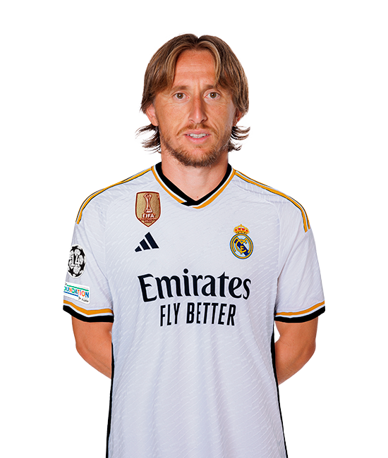

PLAYERS
- Goalkeepers
- Defenders
- Midfielders
- Forwards
-
COURTOIS
GOALKEEPER
1
-
LUNIN
GOALKEEPER
13
-
CARVAJAL
DEFENDERS
2 -
E. Militão
DEFENDERS
3
-
ALABA
DEFENDERS
4
-
NACHO
DEFENDERS
6 -
ODRIOZOLA
DEFENDERS
16 -
LUCAS V.
DEFENDERS
17 -
Fran García
DEFENDERS
20 -
Rüdiger
DEFENDERS
22
-
F.MENDY
DEFENDERS
23
-
BELLINGHAM
MIDFIELDERS
5 -
KROOS
MIDFIELDERS
8
-
Modrić
MIDFIELDERS
10 -
CAMAVINGA
MIDFIELDERS
12 -
VALVERDE
MIDFIELDERS
15 -
Tchouaméni
MIDFIELDERS
18
-
D.CEBALLOS
MIDFIELDERS
22 -
Arda Güler
MIDFIELDERS
23
-
VINI JR.
FORWARDS
7
-
RODRYGO
FORWARDS
11
-
JOSELU
FORWARDS
14
-
BRAHIM
FORWARDS
21
MANAGER
CARLO ANCELOTTI
Nicknamed "Don Carlo" an Italian professional football manager and former player who is the manager of Real Madrid. Ancelotti is the most decorated manager in UEFA Champions League history, having won the trophy a record four times as coach (twice with AC Milan and twice with Real Madrid). He is also the first and only one to have managed teams in five Champions League finals.
LEGEND
-
CRISTIANO RONALDO
-
RONALDO
-
DAVID BECKHAM
-
Zinédine Zidane
-
ROBERTO CARLOS
-
RUUD VAN NISTELROOY
-
KAKÁ
-
IKER CASILLAS